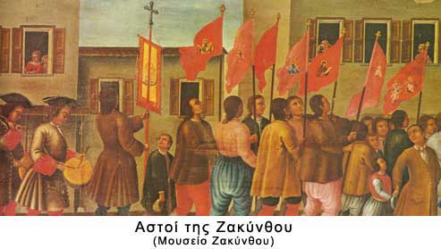

|

Οι αστοί, για τη μεσαιωνική κοινωνία των βενετοκρατούμενων νησιών, ήταν απλά το «πόπολο» της πόλης (πρωτεύουσας του νησιού) χωρίς πολιτικά δικαιώματα και αντιμετωπίζονταν από την τάξη των ευγενών με την ίδια περιφρόνηση, όπως και το «πόπολο» της εξοχής (αγρότες).
Με τη σταδιακή παρακμή όμως της αγροτικής οικονομίας και την ανάπτυξη του εμπορίου και της οικονομίας της αγοράς, οι αστοί έμποροι και βιοτέχνες ενίσχυσαν την οικονομική τους θέση σε βάρος της τάξης των ευγενών – γαιοκτημόνων.
Οι αστοί απαίτησαν συμμετοχή στην τοπική εξουσία των νησιών και η αντίδραση των ευγενών έφερε τη σύγκρουση. Η πρώτη σημαντική εξέγερση έγινε στη Ζάκυνθο με το «ρεμπελιό των ποπολάρων» (1628). Στο τέλος του 18ου αιώνα η αστική τάξη είχε πλέον διαμορφωθεί και είχε αποκτήσει συνείδηση της δύναμής της. Τα μηνύματα του Διαφωτισμού και της Γαλλικής επανάστασης περί ελευθερίας, ισότητας και αδελφοσύνης έγιναν η ιδεολογία της. Με σύμμαχο τους φτωχούς αγρότες της υπαίθρου οι εξεγέρσεις παίρνουν τη μορφή κοινωνικής επανάστασης κατά του «βενετοαριστοκρατικού» καθεστώτος (Κύθηρα 1780) και κορυφώνονται στα χρόνια της «Βρετανικής Προστασίας», όπου οι κοινωνικοί αγώνες αστών και αγροτών αποκτούν εθνικό χαρακτήρα (ριζοσπαστικό κίνημα) με κύριο αίτημα την ένωση των νησιών με την Ελλάδα (Λευκάδα 1819, Κεφαλονιά και Ζάκυνθος 1833-1849).
|
|